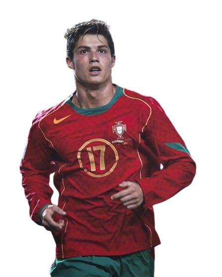
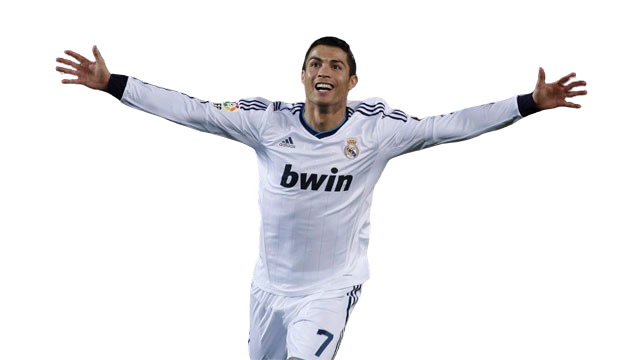
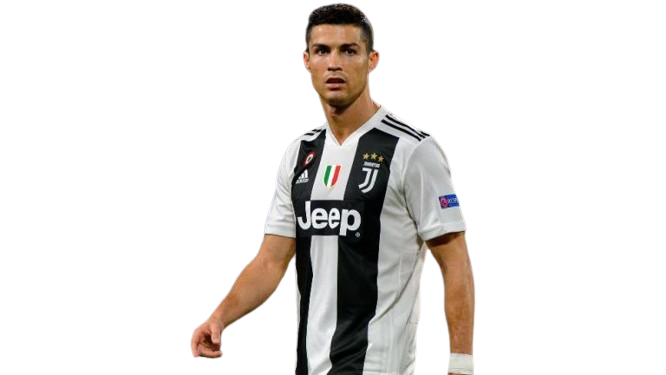
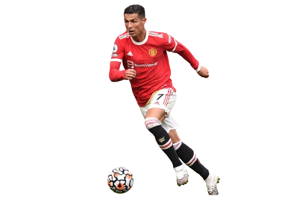
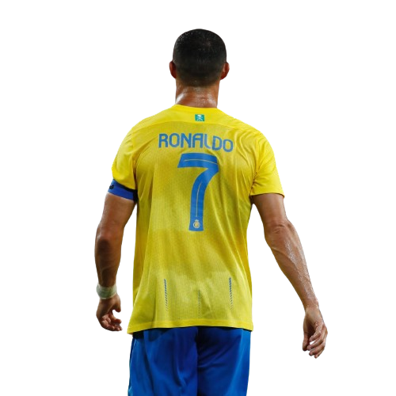

Born Cristiano Ronaldo dos Santos Aveiro on February 5, 1985, in Funchal, Madeira, Portugal, a small island off the western coast of the country, Ronaldo is the youngest of four children born to Maria Dolores dos Santos and Jose Dinis Aveiro. He was named after Ronald Reagan, one of his father's favorite actors. Ronaldo grew up in a largely working class neighborhood in a small tin-roofed home that overlooked the ocean. His early life was shaped by hardship; his father, a gardener, often drank too much, and eventually died from kidney problems in 2005. To help keep the children fed, and maintain some financial stability, Ronaldo's mother worked as a cook and cleaning person.
Intro To football
It was through his dad's work as an equipment manager at a boy's club that Ronaldo was first introduced to the game of soccer. By the time he was 10 years old, he was already recognized as a phenomenon—a kid who ate, slept and drank the game. "All he wanted to do as a boy was play football," his godfather, Fernao Sousa, recalled for British reporters, adding, "He loved the game so much he'd miss meals or escape out of his bedroom window with a ball when he was supposed to be doing his homework."
By his early teens, Ronaldo's talent and legend had grown considerably. After a stint with Nacional da liha da Madeira, he signed with Sporting Portugal in 2001. That same year, at the tender age of 16, Ronaldo turned heads with a mesmerizing performance against Manchester United, wowing even his opponents with his footwork and deft skill. He made such an impression that a number of United players asked their manager to try and sign the young player. It wasn't long before the club paid Ronaldo's team more than £12 million for his services - a record fee for a player of his age.

Success with Manchester United
Ronaldo did not disappoint the soccer world. He showed his promise early on in the 2004 FA Cup final, scoring the team's first three goals and helping them capture the championship. In 2008, a year after signing a five-year, £31 million contract, Ronaldo again justified his high salary when he put together one of the club's finest seasons in history, setting a franchise record for goals scored (42), and earning himself the FIFA World of the Year honor. In all, Ronaldo helped steer Manchester United to three premier league titles. But Ronaldo's time in England was marred by his mother's 2007 struggle with breast cancer as well as his father's death from alcohol-related illness. The latter was especially hard for Ronaldo as the two had been close, and the young athlete had often pushed for his father to enter rehab and address his drinking. His father, however, never accepted the offer.

Real Madrid & National Victory
As lauded as Ronaldo was on the field for Manchester United, his commitment to the club came under constant question. Speculation swirled that he wanted to play elsewhere. So in 2009, when Spanish soccer club Real Madrid agreed to pay United a record $131 million for the chance to sign him, nobody was all that surprised to see Ronaldo leave United.
"I know that they are going to demand a lot of me to be successful at the club and I know that I'm going to have much more pressure than at Manchester United because I was there for many years," Ronaldo told reporters. "But it means a new challenge and is going to help me be the best footballer."
In addition to his FIFA World Player of the year award, Ronaldo has also won the coveted Ballon d'OR, the Golden Boot, and been named the UEFA Club Forward of the Year, among other honors during the course of his career.
On July 10, 2016, Ronaldo added another emotional victory to his accolades, leading Portugal to the European Championship final against France as his national team's captain. Although he was sidelined after suffering a knee injury 25 minutes into the match, Portugal went on to win the championship title 1-0, their first international trophy. Ronaldo's teammates said that he motivated them as team captain from the sidelines. "He gave us a lot of confidence and he said, 'Listen people, I'm sure we will win this Euro so stay together and fight for it,’” full-back Cedric Soares said after Portugal’s victory.
"This is one of the happiest moments in my career,” Ronaldo commented. ”I’ve always said I wanted to win a trophy with the national team and make history. And I did it. Thank God, things went well for us."
In January 2017, Ronaldo won FIFA's 2016 best player of the year for the fourth time, beating out Lionel Messi. Ronaldo’s 2016 wins included the European Championship, Champions League, and Club World Cup, plus individual awards from UEFA and France Football magazine, according to USA Today. In his acceptance speech, Ronaldo said: "2016 was the best year of my career."

Joined Juventus
Ronaldo joined Juventus in 2018 for €100 million, the highest for an Italian club. On 19 September 2018, in his first Champions League match for Juve, he was sent off against Valencia, his first red card in 154 Champions League appearances. In the reverse (home) leg against Valencia, Cristiano won 100 Champions League matches, becoming the first ever player to do so.With 21 goals and eight assists, Ronaldo won the league award for most valuable player.His first Italian trophy was the 2018 Supercoppa Italiana, won on 16 January 2019. When Juventus won the 2021 Coppa Italia final Ronaldo became the first player ever to win every major domestic trophy in England, Spain and Italy.He ended the season with 29 league goals, winning the Capocannoniere, awarded to the highest goalscorer. Ronaldo also became the first footballer to claim top goalscorer in the English, Spanish and Italian leagues.

Return to Manchester United
Ronaldo returned to Manchester United in 2021, reaching 800 career goals after netting two in a 3–2 home league win against Arsenal on 2 December 2021.[74] Struggles ensued, continuing for two months,[75] until he scored in United's 2–0 win at home versus Brighton & Hove Albion on 15 February 2022, his first in the new year.
After becoming unsatisfied with United and manager Erik ten Hag, United terminated his contract on 22 November 2022.

Joined Al Nassr
On 30 December 2022, Saudi club Al-Nassr reached an agreement for Ronaldo to join the club, signing a contract until 2025. Ronaldo received the highest football salary ever, at €200 million per year,including a guaranteed football salary of €90 million, with commercial and sponsorship deals bringing his total annual salary to €200 million.
On 9 February 2023, Ronaldo scored his 500th career league goal in a 4–0 win over Al Wehda.
In the final of the Arab Club Champions Cup on 12 August 2023, Ronaldo scored both goals as they defeated rivals Al-Hilal 2–1 after extra time. Ronaldo scored six goals in the competition.[ On 27 May 2024, against Al-Ittihad, Ronaldo scored his 34th and 35th league goals of the season, setting a record most goals scored in a single Saudi Pro League campaign. He also became the first footballer to finish as top scorer in four different leagues